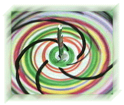
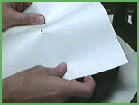
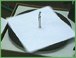
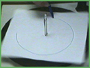
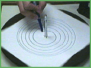
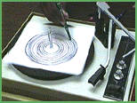
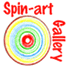
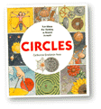

| |
Spinning |
Turntables are treasures:
Turntables are fun to experiment with. Use them to create your own spinart. Turntables are still out there. Try looking for them at garage sales or thrift stores.
Watch one.
- turntable
- masking tape
- scissors
- markers






Send us Spin-Art made on turntables and other spinning things, we'll add it to the Spin-Art Gallery.

|
 |
|
|
||
|
||
|
|
||
 Gathered by topic |
 Connected together |
 Index of ideas |
 Search |